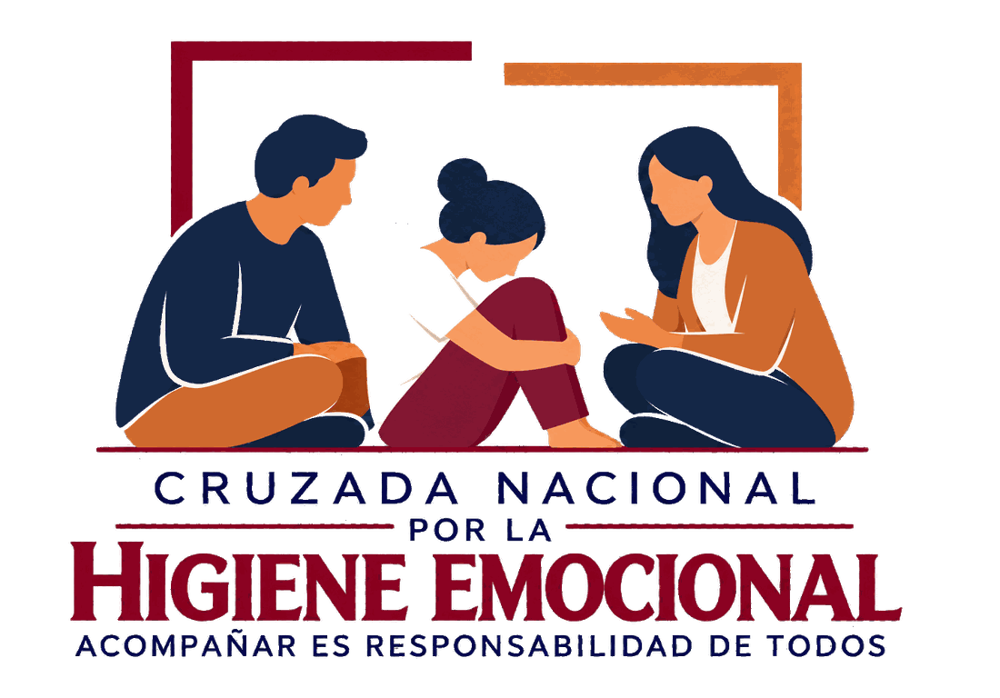

EL VIAJE DE UNA SEMILLA
{{c.text}}
{{m.text}}
Una red de personas y organizaciones que hace posible acercar acompañamiento emocional digno, sensible y accesible.
25
25 TANATÓLOGOS
DISPUESTOS A
ACOMPAÑARTE.
DISPUESTOS A
ACOMPAÑARTE.
{{camHint}}
{{camMsg}}
O SIGUE DESLIZANDO ↓
{{tanaNum}}
{{tanaName}}
{{tanaOrg}}
{{tanaNota}}
CÓMO FUNCIONA
Cuatro pasos, un mismo acompañamiento.
LA SEMILLA AVANZA CONTIGO · SIGUE DESLIZANDO
{{st.n}}
{{st.t}}
{{st.d}}
PASO {{st.n}} DE 04
TU ELECCIÓN
{{eleccionTxt}}
HAY EXPERIENCIAS QUE NO NECESITAN SER EXPLICADAS POR NOSOTROS.
PUEDEN SER CONTADAS POR QUIENES LAS VIVIERON.
VOCES QUE HAN SIDO ACOMPAÑADAS
TESTIMONIO {{tsNum}} / {{tsTot}}
ESCUCHAR SU HISTORIA
— {{tsFirma}}
CADA PROCESO ES DIFERENTE.
EL TUYO TAMBIÉN MERECE SER ESCUCHADO.
CUANDO ESTÉS LISTO/A, PODEMOS COMENZAR.
“ACOMPAÑAR ES RESPONSABILIDAD DE TODOS”
{{a.tag}}
DESLIZA PARA EXPLORAR
Ayuda inmediata
Si tú o alguien más está en riesgo, contacta ahora los servicios oficiales:
{{infoTitulo}}
{{infoTexto}}
{{infoNota}}
{{aliadoSel.name}}
Organización aliada de la Cruzada Nacional por la Higiene Emocional. Semblanza y actividades por confirmar con el aliado.
HAS SELECCIONADO A
{{proSel.name}}
Logotipo y nombre oficiales por confirmar
Aviso de privacidad
La Cruzada Nacional por la Higiene Emocional tratará tus datos de forma confidencial y únicamente para coordinar tu acompañamiento. El documento oficial completo está en preparación y se publicará aquí.
✓
Gracias por dar este paso.
La Cruzada te contactará por el medio que elegiste. No estás solo, no estás sola.
ESTAMOS AQUÍ PARA ESCUCHARTE
{{formTitulo}}
Solo necesitamos algunos datos para ayudarte a encontrar el acompañamiento adecuado. Comparte solo lo que quieras.